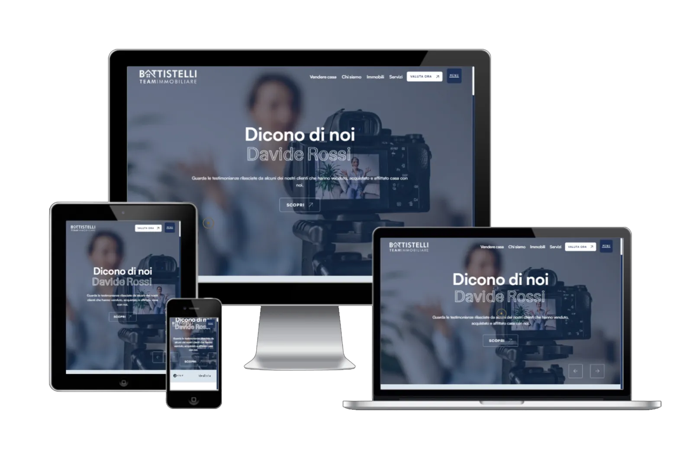
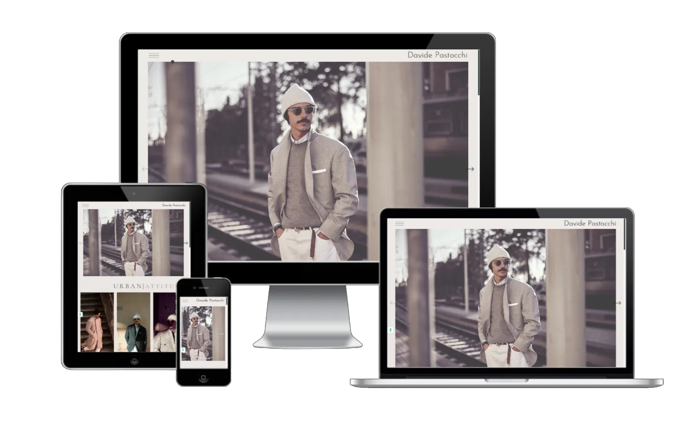
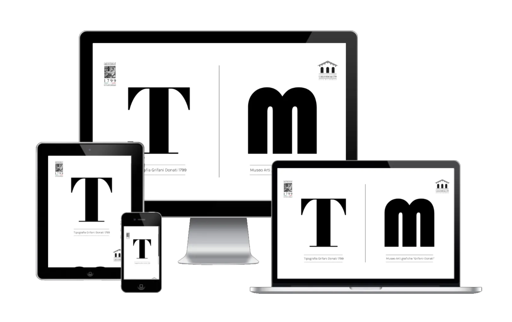
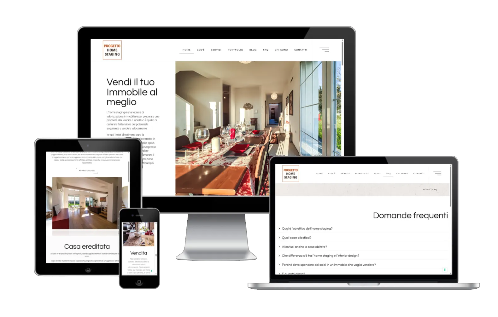
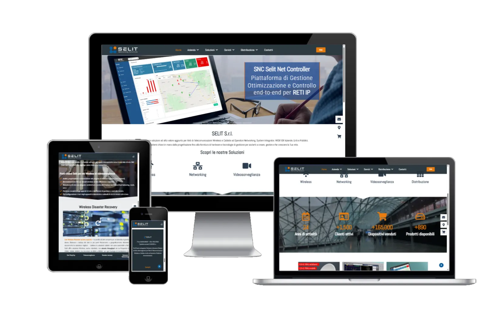

Make it easy,
but significant.
01. Ascolto & Strategia
Ogni progetto inizia con un dialogo approfondito: vogliamo conoscere la tua azienda, i tuoi obiettivi, il tuo pubblico e la tua visione. Analizziamo il mercato in cui operi, i tuoi punti di forza e quelli da migliorare. Da qui costruiamo una strategia digitale personalizzata, pensata per essere efficace, coerente e sostenibile nel tempo. Nessuna soluzione standard: ogni brand ha una storia unica da raccontare, e il nostro compito è darle forma e direzione.
02. Design: Web,Logo,Grafica
Crediamo nel potere del design funzionale ed emozionale. Realizziamo siti web moderni e performanti, loghi distintivi e materiali grafici coerenti con la tua brand identity. Ogni elemento visivo è progettato per comunicare valori, creare connessione e trasmettere professionalità. Dai colori alla tipografia, dal layout alla user experience: tutto è pensato per lasciare il segno e garantire coerenza in ogni punto di contatto col tuo pubblico.
03. Marketing & Promozione
Creiamo e gestiamo campagne pubblicitarie mirate (Google Ads, Meta, Instagram) e piani editoriali per i social, con l’obiettivo di far crescere la tua visibilità, generare contatti e aumentare le conversioni. Ogni strategia è basata sui dati: monitoriamo le performance, ottimizziamo costantemente e ti forniamo report chiari. Con Kodo, il tuo brand non solo è online, ma è attivo, presente e competitivo.
04. Copywriting & SEO
Le parole contano. Per questo scriviamo testi che non solo descrivono ciò che fai, ma trasmettono valore, costruiscono fiducia e invogliano all’azione. Ogni contenuto è studiato per essere leggibile, emozionale e ottimizzato per i motori di ricerca. Lavoriamo sulla SEO on-page, dalla struttura ai meta tag, fino alla scelta delle keyword più strategiche. Il risultato? Un sito che comunica con chiarezza e si fa trovare facilmente.
Progettazione & design grafico
Studio architetture informative e interfacce grafiche che uniscono estetica e funzionalità. Parto dall’analisi del brand e degli obiettivi per creare layout personalizzati, wireframe e prototipi interattivi. Ogni elemento visivo è pensato per guidare l’utente, migliorare la leggibilità e massimizzare il tasso di conversione. L’approccio è UX/UI-oriented, con attenzione al responsive design e all’accessibilità.
Progettazione UX/UI -
Architetture informative e interfacce orientate all’usabilità.Analisi brand e obiettivi -
Struttura progettata in funzione di identità e conversione.Prototipazione e layout personalizzati -
Validazione di layout e flussi prima dello sviluppo.Performance, responsive e accessibilità -
Design ottimizzato per ogni dispositivo e utente.
Sviluppo & Realizzazione
Trasformiamo il progetto grafico in un sito web ad alte prestazioni, ottimizzato e sicuro. Adottiamo un approccio mobile-first per garantire un’esperienza ottimale su ogni dispositivo, con tempi di caricamento rapidi e compatibilità cross-browser. Ogni implementazione segue le best practice di accessibilità e SEO tecnica, con un codice pulito, scalabile e facilmente manutentabile.
Sviluppo performante -
Implementazione ottimizzata per velocità e stabilità.Mobile-first & cross-browser -
Esperienza coerente su ogni dispositivo e browser.Copy & SEO -
Struttura conforme alle best practice di indicizzazione e usabilità.Struttura pulita e scalabile -
Architettura manutenibile e pronta per evoluzioni future.
Assistenza & Gestione
Offriamo un servizio continuativo di manutenzione e aggiornamento del sito, per garantire stabilità, sicurezza e performance nel tempo. Ci occupiamo di backup periodici, monitoraggio uptime, ottimizzazione delle performance e aggiornamento di plugin, tema e core del CMS utilizzato. Su richiesta, forniamo formazione personalizzata e video tutorial per permettere al cliente di gestire in autonomia contenuti e sezioni del sito
Manutenzione continuativa -
Aggiornamenti costanti per garantire stabilità e sicurezza.Backup & monitoraggio -
Controllo uptime e ripristino dati programmato.Ottimizzazione performance -
Aggiornamento di core, tema e plugin con focus su efficienza.Formazione dedicata -
Supporto e tutorial per gestione autonoma dei contenuti.
01.
Battistelli Immobiliare
Sito web realizzato per Battistelli Immobiliare, agenzia attiva nel territorio umbro con una consolidata esperienza nella compravendita e locazione di immobili residenziali, commerciali e di pregio.
Il sito è stato progettato per offrire un’esperienza di navigazione fluida e moderna, con un’interfaccia pulita che valorizza ogni immobile attraverso gallerie fotografiche curate e schede tecniche dettagliate.
Il cuore del progetto è un database dinamico che raccoglie tutte le proprietà disponibili, con un sistema di filtri avanzati che consente agli utenti di cercare facilmente l’immobile più adatto alle proprie esigenze, in base a criteri come tipologia, prezzo, zona e metratura.
È stato inoltre integrato un form dedicato alla valutazione immobiliare, che permette ai proprietari di richiedere una stima gratuita del proprio immobile in modo semplice e veloce, contribuendo a generare nuovi contatti per l’agenzia.

02.
Davide Pastocchi
Sito web creato per Davide Pastocchi, un talentuoso artigiano che ha recentemente inaugurato la sua sartoria su misura nel borgo di Perugia. La sartoria di Davide è specializzata in abiti da uomo, confezionati seguendo le antiche tradizioni sartoriali e utilizzando solo tessuti di alta qualità.
Il sito web è stato progettato per riflettere la maestria e l’arte sartoriale di Davide.
Particolare cura è stata dedicata all’aspetto visivo del sito, con varie gallerie fotografiche che mostrano esempi delle creazioni di Davide, dando ai visitatori una visione immediata della qualità e dello stile unico dei suoi abiti.
Il risultato è un sito web che non solo celebra l’arte della sartoria classica ma offre anche una piattaforma funzionale e accattivante per attirare nuovi clienti e appassionati di moda.

03.
Tipografia Grifani Donati
La realizzazione del sito web per la storica tipografia Grifani Donati, fondata nel 1799, è stata un progetto affascinante. Il sito web è stato diviso in due parti, una dedicata alla tipografia e l’altra al museo.
Il sito è stato costruito con un design moderno, elegante e raffinato, in linea con l’atmosfera unica e l’esperienza secolare dell’azienda.
Inoltre, particolare attenzione è stata prestata all’usabilità del sito, garantendo una navigazione semplice e intuitiva per gli utenti.
Il risultato finale è stato un sito web accattivante e funzionale, in grado di valorizzare al meglio la tipografia Grifani Donati e la sua storia centenaria.

04.
Progetto Home Staging
Abbiamo realizzato il sito web per Progetto Home Staging, con l’obiettivo di valorizzare la trasformazione degli spazi abitativi in ambienti accoglienti e funzionali.
Il progetto combina un design pulito ed elegante con un’interfaccia intuitiva, studiata per trasmettere la professionalità e l’identità del brand. Abbiamo integrato un blog tematico e un portfolio visivo, arricchito da gallery fotografiche capaci di raccontare l’efficacia degli interventi svolti.
Il sito integra una sezione blog dedicata all’approfondimento delle tematiche legate al mondo dell’home staging, con contenuti utili e aggiornati pensati per coinvolgere il pubblico e rafforzare la brand authority.
Abbiamo inoltre valorizzato il portfolio attraverso gallery fotografiche ad alto impatto, in grado di raccontare visivamente il processo di trasformazione degli ambienti e l’efficacia degli interventi svolti.
Un progetto pensato per comunicare valore, estetica e strategia in modo coerente e distintivo.

05.
Selit
L’esperienza di creare il sito web per Selit, un punto di riferimento nel panorama delle reti di telecomunicazioni wireless e cablate, è stata stimolante e coinvolgente.
Abbiamo strutturato il sito in tre sezioni fondamentali, ognuna focalizzata sui principali servizi offerti: isolamento termico, isolamento acustico e soluzioni personalizzate. Il design del sito è una fusione di modernità, raffinatezza ed eleganza, in perfetta armonia con l’identità unica di Selit nel settore.
Abbiamo dedicato particolare attenzione all’esperienza dell’utente, garantendo una navigazione fluida e intuitiva. Il risultato è stato un sito web accattivante e altamente funzionale, capace di riflettere in modo magistrale l’ampia gamma di soluzioni offerte e l’esperienza consolidata di Selit nel campo delle telecomunicazioni.
Il sito offre una piattaforma coinvolgente per esplorare i nostri servizi e i progetti realizzati in passato, trasmettendo con efficacia la nostra passione e il nostro impegno nel fornire soluzioni di connettività all’avanguardia ai nostri clienti.
